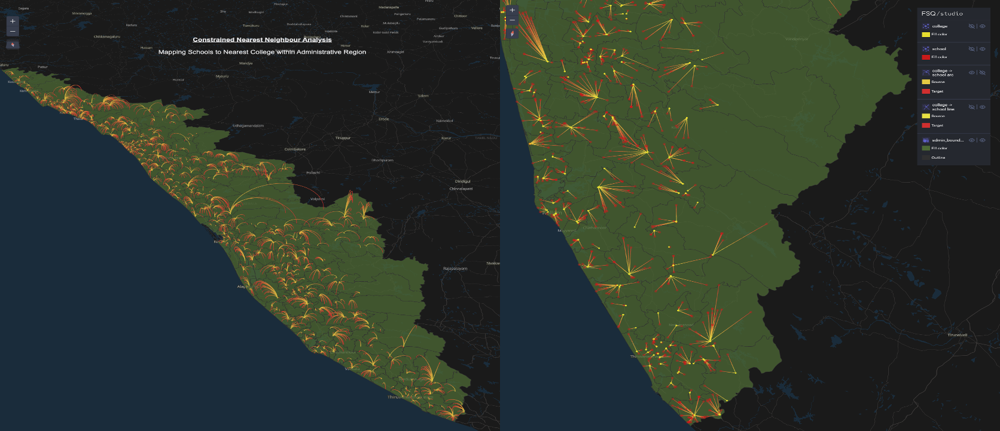

Überblick
Ein Beitrag zum #SpatialAnalysisChallenge von Spatial Thoughts — Erkundung von Bildungs-Raumnähen in Kerala, Indien (God's Own Country). Die Analyse entschlüsselt die räumlichen Beziehungen zwischen Schulen und ihren nächstgelegenen Hochschulen innerhalb derselben Verwaltungsregionen und deckt Distanzen und Nähe-Muster in ganz Kerala auf.
Ein persönlich bedeutsames Projekt — das Navigieren durch Keralas Bildungslandschaft brachte Erinnerungen an Schul- und Studientage zurück und offenbarte gleichzeitig faszinierende räumliche Erkenntnisse über die Infrastruktur des Bundesstaates.
Methodik
Datenintegration
Integration von Schul- und Hochschuldatenschichten in QGIS — Verknüpfung jeder Einrichtung mit ihrer Verwaltungsregion für eine verwaltungsgebundene Näheanalyse.
Kürzeste-Distanz-Speicherschicht
Verwendung von QGIS-Ausdrücken und geometrischen Berechnungen zum Aufbau einer detaillierten Speicherschicht "shortest_distances", die die nächstgelegene Hochschule für jede Schule innerhalb derselben Verwaltungsgrenze erfasst.
Räumliche Erkenntnisse
Analyse der resultierenden Distanzen zur Beleuchtung von Stadtentwicklung, Infrastrukturplanung und Bildungszugänglichkeit in Keralas Distrikten.

Tools & Technologien
- QGIS — Ausdrücke und geometrische Berechnungen
- Speicherschicht-Erstellung ("shortest_distances")
- Foursquare Studio zur Veröffentlichung der interaktiven Karte
Ergebnis
Erstellung einer Raumanalyse der Nähe von Bildungseinrichtungen in Kerala — mit Erkenntnissen zu Schule-Hochschule-Distanzen, stadtplanerischen Überlegungen und Zugänglichkeit im gesamten Bundesstaat.